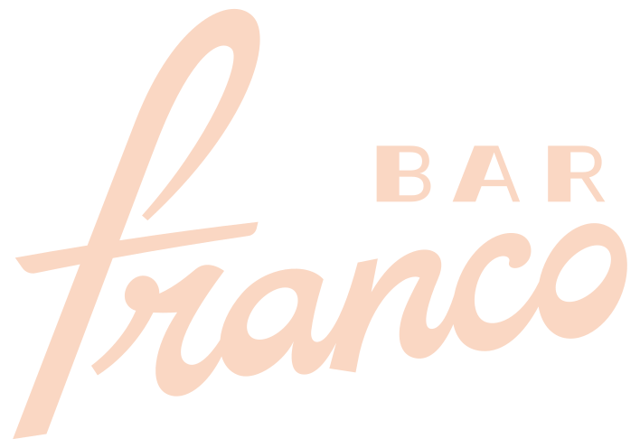
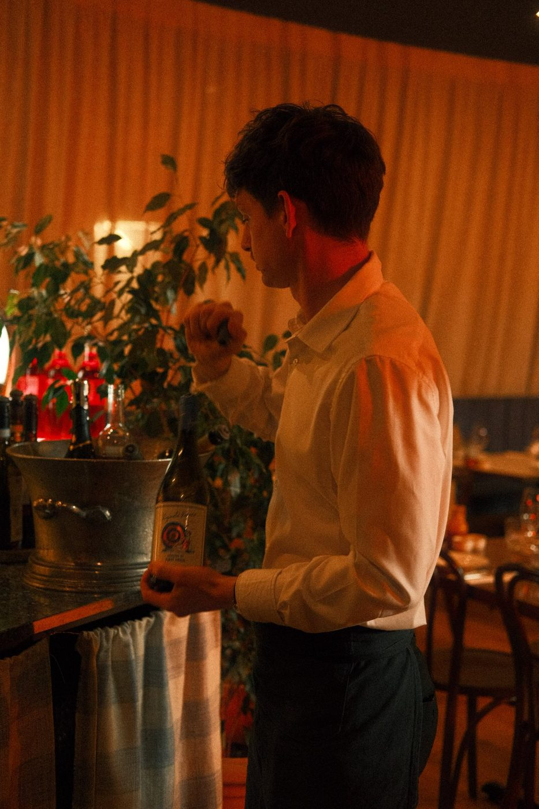
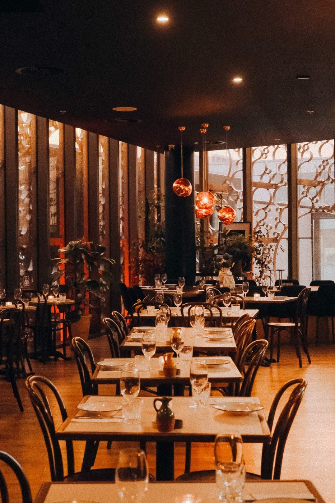

Level 1
The Negroni & Spritz Bar
Rose-red plaster from wall to ceiling, fringed lamps, curved blue velvet booths and a canopy of dried flowers, lit low and warm.
- Seated80
- Standing120



Bar Franco · Christmas functions · 1–23 December
10 to 240 · two floors · no venue hire fee · The Crossing, Christchurch
01 · Menu & prices
Natale
Christmas, set the Italian way
House-made pasta and antipasti down the middle of the table, canapés passed on trays, and a bar that starts with a Negroni. Generous, Italian, and made to share.

02 · The night
Not a function room, and not function staff: a team with hospitality in their bones. The night your team still talks about in March.



“We’ve had glowing reports from the whole team — thank you again for having us.”
Giana, corporate function
03 · The rooms
Or take both levels, exclusively yours, for up to 240: canapés in the bar, dinner upstairs, back to the bar.
Two floors, one building
Level 1
Rose-red plaster from wall to ceiling, fringed lamps, curved blue velvet booths and a canopy of dried flowers, lit low and warm.

Level 2
A curved wall of floor-to-ceiling windows behind a patterned screen, plants along the glass, copper lamps overhead and the open kitchen in full view.
04 · How it works
One person looks after you, from your first email to the last drink.
Send your date and numbers. Within one business day we send a proposal and the events pack. A deposit from 500 holds the date, and comes off your drinks bill.
Menus from 40pp, drinks on consumption, no venue hire fee. Friday and Saturday carry a minimum spend, from 4,000 for the bar; midweek, usually none. We keep you posted on the spend on the night, so the invoice holds no surprises.
Your host, microphones for speeches, a projector and screen, and room for a band or a DJ. Last drinks 11:30pm.
Every one. Custom food and drink menus on request; final numbers and dietaries five days before.
Upstairs at 166 Cashel Street, The Crossing, in the CBD. Lift near H&M and KOOKAÏ; the carpark is right there. Closed 23 December to 5 January.
05 · Enquire
December Fridays go first. Send your date and your numbers. Jenna or Ana-Maria replies within one business day with availability, a proposal and the events pack. Your date is pencilled in while you decide, and the deposit comes off your drinks bill.